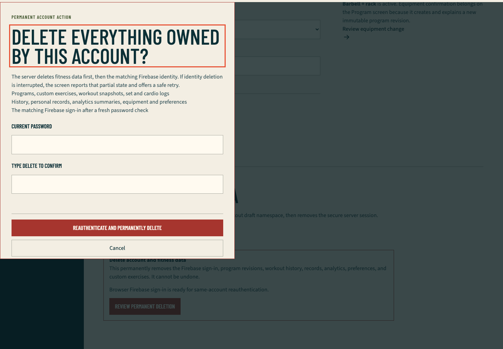
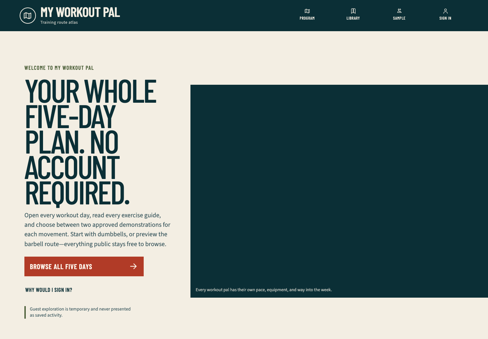

Hosted account deletion and two-user ownership QA
Scope
This is the newest completed QA run. The credentialed lifecycle exercised the public production application at runtime commit aefc2ba886ee1ccff9a93784c982bc07dd63bb14, Ready deployment dpl_RrMuKj17bZSGVsZTun32F7YmCLTq, using the exact committed harness checkpoint f9f1bae477c62c6fdc0db3f51b7e4db86d6817b2.
The run used exactly two generated high-entropy password identities in the reserved example.com domain. Firebase Admin created them as verified only for this test. Neither identity belonged to a member or personal mailbox. No email, password, UID, cookie, CSRF token, database URL, opaque program/exercise/workout ID, provider payload, trace, video, storage state, or browser profile was printed or retained.
Production behavior observed
- Alice and Bob established independent production sessions through the real Firebase client and
/api/auth/session. Both cookies wereHttpOnly,Secure,SameSite=Strict, and path/. - Alice completed the visible keyboard-driven dumbbell onboarding, then created one owner-scoped private exercise and one active workout. Bob completed the visible barbell onboarding in a separate browser context.
- Bob's foreign and random-missing custom-exercise reads were equal
404responses with identical privateno-storepolicy and safe bodies. - Bob's foreign and random-missing workout reads were equal
404responses with identical privateno-storepolicy and safe bodies. - Bob's attempts to activate Alice's program and a random missing program were equal
404responses. In-memory owner row counts and full-row digests for Alice and Bob were unchanged. - Bob's foreign and random-missing workout pages produced equal explicit not-found UI with equal private
no-storepolicy androbots=noindex. Production returned the documented Next 16 streamed200boundary after headers had begun; the private APIs remained real404boundaries. - Bob opened the permanent-deletion review with keyboard focus on its heading, cancelled once, and returned focus to Review permanent deletion. A wrong password returned the bounded application error and did not change Firebase or Neon state.
- Bob then reauthenticated with the correct password, entered
DELETE, deleted only Bob, cleared the secure cookie and owner-local browser namespace, and returned to/?account=deleted. Alice's complete owner digest remained unchanged and Alice's protected program still rendered. - Alice independently opened Settings, passed the same focused review boundary, and completed her own deletion. The final public return loaded the decoded cartoon gym hero and exposed no member identity.
- Every owned row for both captured UIDs was absent after deletion; both saga jobs were terminal or absent as permitted; global catalog, exercise-video, template, and template-revision counts were unchanged.
- Aggregate Firebase users were
0before and0after. The final safe result reported 12 exact first-party mutations, four foreign/missing probe classes,globalCountsVerified: true, andcleanupConfirmed: true.
Retained fail-first evidence
- The pure response/cleanup test initially failed because the hosted browser module did not exist. The final focused matrix passes 3 files and 11 assertions.
- Ten bounded diagnostic replays stopped safely before the exact passing run. Every one confirmed exact-account cleanup and returned Firebase to the baseline count.
- Early replays exposed a copied not-found sentence that did not match the nested production boundary. The runner now asserts the semantic not-found state rather than one presentation string.
- The production route demonstrated documented Next 16 streamed-not-found behavior: equal
200rendered responses withnoindex, while the private APIs returned equal404s. The harness now treats status equality, private cache denial, normalized visible outcome, andnoindexas the rendered authorization proof. - A strict hydrated-head locator did not consistently expose injected streaming metadata. The final check accepts
noindexonly when it exists in either the raw streamed document or hydrated head. - Chromium emitted one generic console resource error for the deliberate wrong-password
400and one for each of the six deliberate private-API404s. Those statuses are derived from exact awaited operations and HTTP failures; every other console error remains fatal. - The first exact-commit replay caught a race where
page.goto()completed before streamed not-found text reached the DOM. The final harness waits for the explicit terminal UI before comparison. - The initial public-return capture occurred before the lazy cartoon hero decoded. The final source waits for a positive natural width, and the retained screenshot was recaptured from the same production runtime only after the image loaded.
Automated evidence
pnpm exec vitest run tests/unit/hosted-deletion-browser.test.ts tests/unit/hosted-deletion-command.test.ts tests/unit/hosted-deletion-qa.test.ts: 3 files, 11 assertions passed.pnpm typecheck: passed on exact harness source.- Scoped ESLint for the configuration, command, browser runner, and focused tests: passed.
MWP_HOSTED_DELETION_EXTERNAL_ACCOUNTS_APPROVED=1 pnpm test:e2e:hosted-deletion-idor: passed in Chromium at1440×1000on exact checkpointf9f1bae477c62c6fdc0db3f51b7e4db86d6817b2.- Serious and critical Axe results were empty on the rendered denial, open deletion review, wrong-password state, and Alice's intact Settings state.
- The first-party response collector matched exactly six deliberate API
404s. No unexpected first-party failure, request failure, console warning, page error, or mutation occurred. - The exact first-party mutation total was 12: two session creates, two onboardings, one custom exercise, one workout start, two denied activation attempts, two fresh-session exchanges for reauthentication, and two account deletions.
Browser evidence
Permanent-deletion review

The modal is fully visible within 1440×1000, explains the database-first/Firebase-second boundary, names the deleted data classes, exposes password and exact-phrase inputs, and keeps the destructive and cancel controls reachable. No generated identity or opaque resource is visible.
Public return after deletion

The final account returned to the public guest-first landing page with the complete decoded animal-cartoon gym illustration. The header offers Sign in, proving no authenticated shell or identity remained in the capture.
Disk and artifact hygiene
The hosted runner launched Chromium directly and did not create .next, fixture .next-authenticated, test-results, playwright-report, trace, video, or saved-profile directories. Failed-run screenshots were deleted automatically. Four stale sub-32-KiB temporary HTML/header probes from the preceding release closeout were removed. Only the two reviewed PNGs above are retained for this run.
The reusable 840 MB node_modules tree and 781 MB repository-local pnpm store remain while the persistent goal has unfinished gates; keeping them avoids repeated downloads and unpacking. The workspace volume reported about 192 GiB free after the exact run.
Remaining gates
- Real Google sign-in, Google reauthentication, and popup cancellation require an interactive Google consent session.
- Verification-link and recovery-message delivery were intentionally not observed with reserved non-deliverable addresses.
- Authenticated production video playback/fallback, actual 200-percent browser zoom, and Vercel Spend Management/notification inspection remain open.